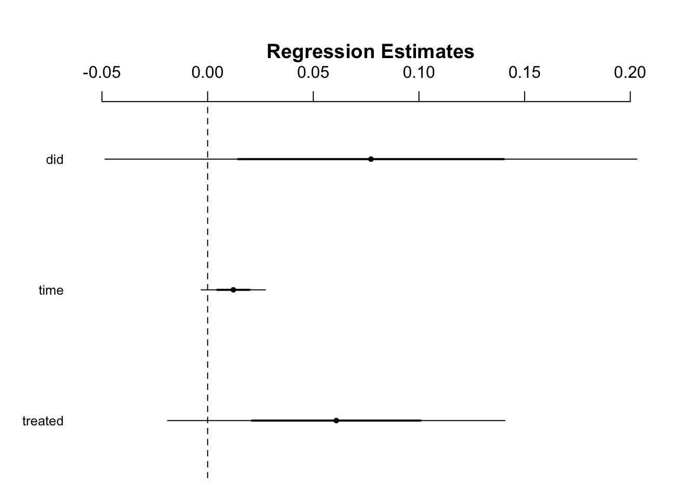
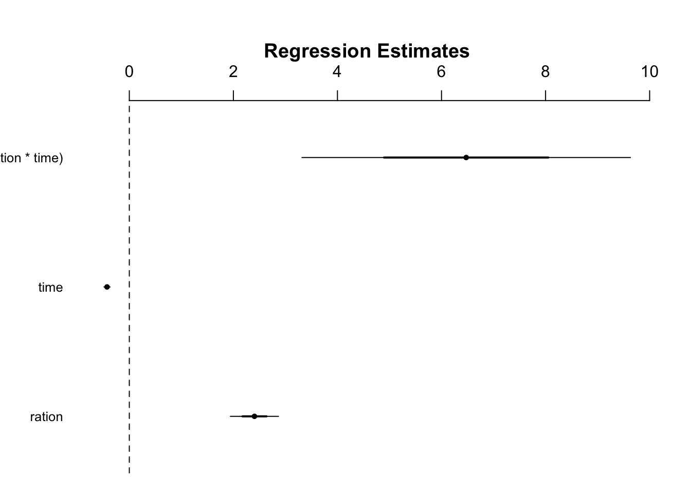

Download the script here
One interesting question is: How have things changed from before to after COVID-19. For example, one could be interested how environmental policies have shaped the air quality before and after corona. Hereby, we would need to distinct between a period before and after a specific point. Two methods, the difference-in-difference and the regression discontinuity design are both regression models that allow us to do so.
Given many limitations (read more here and here), this section should give you an overview on how to potentially use the data.
Be cautious, the underlying examples are not meant to make sense but just show you how to use the methods via R.
# -------------------------------------------------
# load packages
# -------------------------------------------------
rm(list=ls())
library(readr)
library(tidyverse)
# -------------------------------------------------
# load data
# -------------------------------------------------
coronaNet <- read_csv("data/coronanet_release_allvars.csv")
wb <- read_csv("data/API_NY.GDP.PCAP.PP.CD_DS2_en_csv_v2_988619.csv", skip = 4)
# -------------------------------------------------
# # subset and merge data
# -------------------------------------------------
businessRestrict = coronaNet %>% filter(type %in% c("Restriction and Regulation of Businesses" ,"Restriction of Non-Essential Businesses"))
wb = wb %>% gather("year", "gdpPPP", -`Country Name`, -`Country Code`, -`Indicator Name`, -`Indicator Code`, -X65)
wb = wb %>% select( -`Indicator Name`, -`Indicator Code`, -X65)
wb$year = as.numeric(wb$year)
wb$lgdpPPP= log(wb$gdpPPP)
data = merge(businessRestrict, wb %>% filter(year == 2018), by.x = 'ISO_A3', by.y = "Country Code", all.x = TRUE)
dataAgg = data %>%
group_by(country) %>%
summarise(numBusinessRestrictions = n(),
gdpPPP = mean(gdpPPP))
businessRestrictAgg = businessRestrict %>%
group_by(date_announced, country) %>%
summarise(numBusinessRestrictions = n())
dframe = expand.grid(unique(coronaNet$date_announced), unique(coronaNet$country))
names(dframe) = c('date_announced', 'country')
businessRestrictFull = merge(dframe, businessRestrictAgg, by = c('date_announced', 'country'), all.x = TRUE)
businessRestrictFull$numBusinessRestrictions = ifelse(is.na(businessRestrictFull$numBusinessRestrictions), 0, businessRestrictFull$numBusinessRestrictions)
RestrictAgg = coronaNet %>%
group_by(date_announced, country) %>%
summarise(numpolicies = n())%>%
filter(!is.na(date_announced))
businessRestrictFull = merge(businessRestrictFull, RestrictAgg, by = c('date_announced', 'country'), all.x = TRUE)
businessRestrictFull$numpolicies = ifelse(is.na(businessRestrictFull$numpolicies), 0, businessRestrictFull$numpolicies)
businessRestrictFull$ratio<-businessRestrictFull$numBusinessRestrictions/businessRestrictFull$numpoliciesIn our case, we want to know if countries that experienced Corona early on have a higher number of business restrictions. One could also ask how air pollution has changed pre and post corona. But for now, we focus on the sole number of policies and the ratio of business restrictions and all policies. We are interested if countries that experiences Corona infections at the beginning have more business restrictions compared to other countries before the first of April. Doing so, we need to generate two dummies: One about the treatment group. Hereby, we take Italy, China, and Iran as those countries that experienced hard impacts and set the others to 0. For the time dummy, we set all dates before April 1st to 0 and the others to 1.
# Create a dummy variable to indicate the time when the treatment started. Lets assume the Corona crisis started April 2020. In this case, days before April 2020 will have a value of 0 and April+ a 1.
businessRestrictFull$time = ifelse(businessRestrictFull$date_announced >= "2020-04-01", 1, 0)
# Create a dummy variable to identify the group exposed to the treatment. In this example lets assumed that countries Italy, Iran and China experienced hard COVID-Waves (=1). Other countries did not (=0).
businessRestrictFull$treated = ifelse(businessRestrictFull$country == "Italy" | businessRestrictFull$country == "China" | businessRestrictFull$country == "Iran", 1, 0)Now, we want to create an interaction effect that allows us to understand how treatment groups differ in their reaction over time:
# Create an interaction between time and treated. We will call this interaction ‘did’.
businessRestrictFull$did = businessRestrictFull$time * businessRestrictFull$treatedEstimating the difference-in-difference estimator is now only a single line of lm regression:
# Estimating the DID estimator
didreg = lm(numBusinessRestrictions ~ treated + time + did, data = businessRestrictFull)
summary(didreg)##
## Call:
## lm(formula = numBusinessRestrictions ~ treated + time + did,
## data = businessRestrictFull)
##
## Residuals:
## Min 1Q Median 3Q Max
## -0.206 -0.067 -0.055 -0.055 33.945
##
## Coefficients:
## Estimate Std. Error t value Pr(>|t|)
## (Intercept) 0.055234 0.004830 11.437 <2e-16 ***
## treated 0.060871 0.039923 1.525 0.127
## time 0.012175 0.007611 1.600 0.110
## did 0.077276 0.062913 1.228 0.219
## ---
## Signif. codes: 0 '***' 0.001 '**' 0.01 '*' 0.05 '.' 0.1 ' ' 1
##
## Residual standard error: 0.6476 on 30541 degrees of freedom
## (205 observations deleted due to missingness)
## Multiple R-squared: 0.0004418, Adjusted R-squared: 0.0003436
## F-statistic: 4.5 on 3 and 30541 DF, p-value: 0.003678library(arm)
coefplot(didreg)
The coefficient for ‘did’ is the differences-in-differences estimator. The effect is not significant with the treatment having a positive effect on business restrictions between the two time dimensions
The problem is - as a matter of design -that we can not clearly identify countries that received the treatment (early cases). We would need to have a better distinction between the groups. Also, it is quite arbitrary to choose the first of April. What makes more sense is to analyze how things have changed pre- and post-corona. But this is something you should be able to do with this tutorial ;)
With the regression discontinuity design we forget about country differences and have one treatment group. We are interested: How things change after one (or multiple) time periods. Again, this assumes that everything is equal except the influence of the shock. Nonetheless, this is quite a good way for COVID-19 analyses.
# With the Regression Discontinuity Design, we loose the Control/Treatment group character and focus on the time difference.
# In our preliminary example, we want to check the influence of cases on the number of policies (be careful: This is only an example to illustrate the stats and does not make a lot of sense)
download.file("https://covid.ourworldindata.org/data/ecdc/total_cases.csv", "./data/cases.csv")
cases <- read_csv("data/cases.csv")## Parsed with column specification:
## cols(
## .default = col_double(),
## date = col_date(format = "")
## )## See spec(...) for full column specifications.cases<-gather(cases,"country","cases",3:212,-date)
cases$date_announced<- cases$date
cases$ration <- cases$cases/cases$World
cases<-cases[,-1]
test<- left_join(businessRestrictFull,cases, by=c("country","date_announced"))didreg = lm(numpolicies ~ ration + time + I(ration * time), data = test)
summary(didreg)##
## Call:
## lm(formula = numpolicies ~ ration + time + I(ration * time),
## data = test)
##
## Residuals:
## Min 1Q Median 3Q Max
## -3.185 -0.780 -0.356 -0.352 45.179
##
## Coefficients:
## Estimate Std. Error t value Pr(>|t|)
## (Intercept) 0.77982 0.02218 35.155 < 2e-16 ***
## ration 2.40504 0.23131 10.398 < 2e-16 ***
## time -0.42825 0.02937 -14.584 < 2e-16 ***
## I(ration * time) 6.47448 1.57842 4.102 4.12e-05 ***
## ---
## Signif. codes: 0 '***' 0.001 '**' 0.01 '*' 0.05 '.' 0.1 ' ' 1
##
## Residual standard error: 1.878 on 17861 degrees of freedom
## (12885 observations deleted due to missingness)
## Multiple R-squared: 0.01968, Adjusted R-squared: 0.01952
## F-statistic: 119.5 on 3 and 17861 DF, p-value: < 2.2e-16library(arm)
coefplot(didreg)